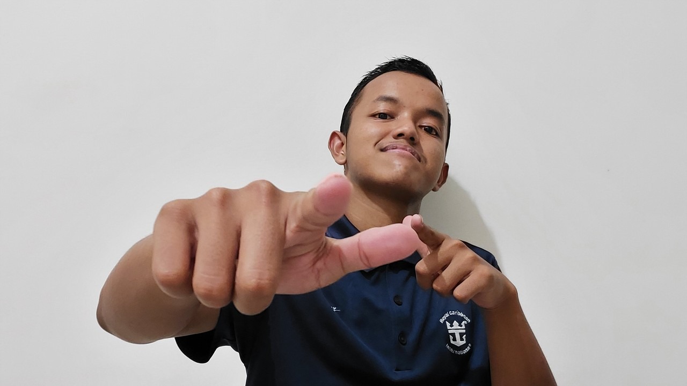

About Me
Saya adalah seorang mahasiswa (tidak) biasa, yang selalu ingin menambah pengetahuan baru. Selain berminat di bidang matematika, saya juga memiliki minat di bidang programming, seperti machine learning dan desain web (ya, web ini salah satu contohnya). Dan juga, saya juga memiliki sedikit skill di bidang editing, baik editing foto (Photoshop, Canva), editing & producing lagu (FL Studio), maupun editing video (VideoPad, Kinemaster).

Saya bukan orang yang pendiam, hanya saja bingung apa yang ingin dibicarakan (hey). Mudah bekerja sama, tetapi kurang berbakat menjadi seorang pemimpin (kecuali bila memang benar-benar menguasai apa yang sedang dikerjakan). Saya lebih suka membahas topik yang memerlukan pemikiran lebih, karena saya lebih sering memilih berpikir lebih jauh ketimbang bekerja lebih keras.